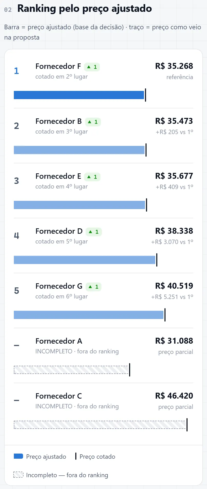
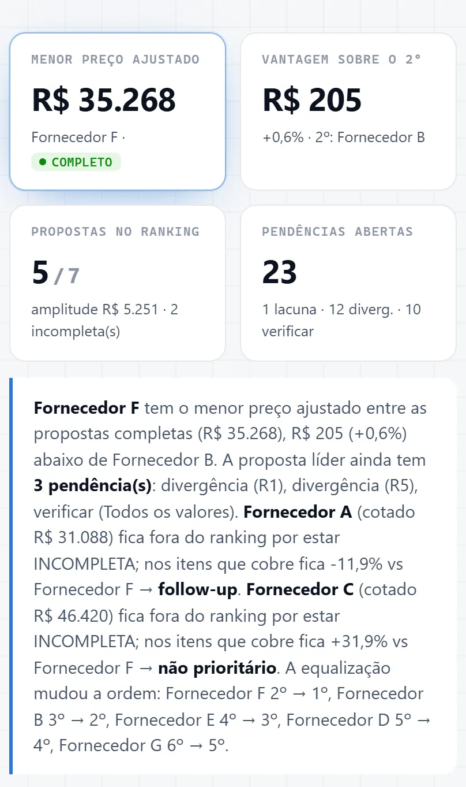
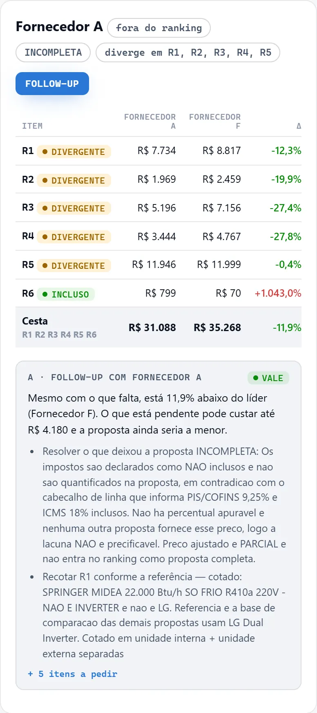
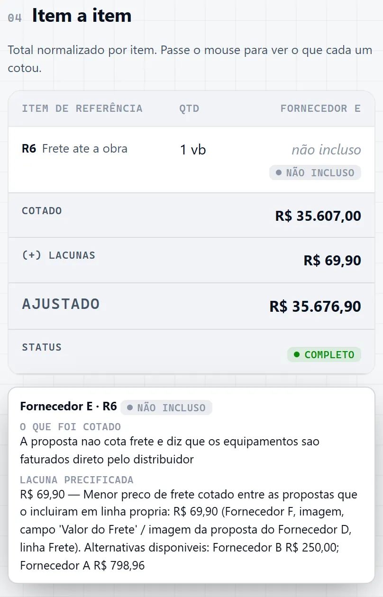

Passo 03 de 04 · Equalização de propostas
Equalização que mostra quem cobrou menos e quem deixou escopo de fora
Ele monta as planilhas de escopo e de propostas, equaliza tudo no mesmo escopo e devolve um painel com o ranking pelo preço ajustado contra o cotado, as lacunas precificadas com a fonte, o que pedir a cada fornecedor e as pendências abertas.
Quero montar do zero um módulo de EQUALIZAÇÃO DE PROPOSTAS para obra/reforma. Ainda não tenho nenhum input: sua primeira tarefa é criar os templates de entrada com dados de exemplo (mock), que eu vou substituir pelos reais. Depois que eu preencher, você gera as saídas. PRINCÍPIOS (valem para tudo) - Nada inferido: campo sem fonte vira "não declarado" / VERIFICAR / lacuna. O motor só faz aritmética e aplica critérios explícitos, nunca estima preço. - Nada apagado: antes de sobrescrever uma saída, copie a versão anterior para <pacote>/_versoes/. - Idempotente: rodar de novo sem mudar os inputs gera o mesmo resultado. - Stack: Node + exceljs. Não dependa de Python. ESTRUTURA Equalizacao/ _motor/ (código + README.md) <pacote>/ (um por pacote de compra; crie "exemplo-guarda-corpo") escopo.xlsx ← eu preencho propostas.xlsx ← eu preencho propostas/ ← PDFs/imagens das propostas EQUALIZACAO.xlsx + EQUALIZACAO.html ← saídas geradas ETAPA 1: TEMPLATES (crie, preencha com mock e PARE para eu preencher) Comando: node _motor/novo.js <pacote> cria a pasta com os dois templates. escopo.xlsx - Aba ESCOPO: - cabeçalho: pacote, título, origem do escopo, status (RASCUNHO/VALIDADO); - tabela: item (R1, R2…), descrição, un, qtd, PU de referência interno (opcional), observação. - Aba EXIGENCIAS: o que a obra exige em prazo, pagamento, frete, impostos, garantia, validade mínima, mobilização/descarga/montagem, documentação (ART, NF, seguro). propostas.xlsx - Aba FORNECEDORES (1 linha por proposta vigente): fornecedor, data, nº do orçamento, arquivo (caminho em propostas/), leitura (TEXTO/IMAGEM/MISTO), total declarado pelo fornecedor, validade, prazo, pagamento, frete, impostos, garantia, exclusões, escopo adicional oferecido, observação. - Aba ITENS (formato longo, 1 linha por fornecedor × item de referência): fornecedor, item, situação (INCLUSO / DIVERGENTE / NAO INCLUSO / GLOBAL = só preço global), descrição cotada, un cotada, qtd cotada, PU, total, página/trecho, lido de imagem (S/N), o que diverge. - Aba ATENDE (fornecedor × exigência): S / N / VERIFICAR. Eu marco; você não julga. - Aba VERIFICAR (opcional): fornecedor, onde, o que conferir, motivo. - Aba REVISOES (opcional): fornecedor, versão anterior (arquivo), data, valor, o que mudou. - Use validação de dados (listas suspensas) para item, situação, leitura, S/N. - Inclua uma aba LEIA-ME curta em cada arquivo. Dados mock: - 2 itens (guarda-corpo de vidro em cj; corrimão de parede em m) e 4 fornecedores fictícios, montados para exercitar todas as regras: - um completo e aderente; - um líder com item DIVERGENTE; - um barato mas INCOMPLETO (sem o corrimão); - um só com preço GLOBAL e total declarado ≠ soma das linhas. - Marque o mock de forma visível: célula "DADOS DE EXEMPLO" no topo e linhas em cinza itálico. Enquanto a marca existir, as saídas exibem a faixa "DADOS DE EXEMPLO". ETAPA 2: VALIDAÇÃO (quando eu disser que preenchi) Comando: node _motor/validar.js <pacote>. Liste erros de forma objetiva, sem gerar nada se houver erro bloqueante: - item fora do escopo; - fornecedor sem linha em ITENS; - unidade cotada ≠ unidade da referência; - PU × qtd ≠ total; - arquivo inexistente. ETAPA 3: MOTOR (node _motor/gerar.js <pacote>…) Regras de cálculo: - Normalizado por item: se tem PU e a unidade bate, PU × qtd da referência; senão, total cotado, marcado "não normalizável". - Lacuna (NAO INCLUSO): precificar com o PU interno do escopo; se não houver, com o menor PU ADERENTE (INCLUSO, > 0) dos demais × qtd. Sempre citar a origem. Sem preço possível → lacuna não precificável → proposta INCOMPLETA. - Total declarado ≠ soma das linhas (> 1%): VERIFICAR e INCOMPLETA (valor comprometido em aberto). - Ajustado = normalizado + lacunas. Ranking só entre as COMPLETAS. Mostrar quantas posições cada uma subiu ou desceu (cotado → ajustado). - Pendências automáticas: - LACUNA por item não incluso; - DIVERGENCIA por item divergente; - VERIFICAR para os itens da aba VERIFICAR, valores lidos de imagem e total inconsistente. - Avisos da rodada: - escopo em RASCUNHO; - exigências vazias; - propostas vencidas (pela validade declarada); - ATENDE com N ou VERIFICAR. Escopo divergente (padrão). Toda proposta INCOMPLETA, com item NÃO INCLUSO ou com item DIVERGENTE recebe: - Comparação item a item nos itens que ela cobre com preço próprio, contra o líder (ou o 2º, se ela for a líder) e contra o menor preço aderente dos demais. Só preço global = "não comparável". - A · Follow-up: folga = ajustado do líder − ajustado dela. - VALE se ficar ≥ 3% abaixo do líder, ou se for a própria líder (firmar o escopo antes de contratar). - AVALIAR se estiver até 5% acima do líder e tiver divergência. - Caso contrário, NÃO VALE. - Gerar checklist do que pedir a partir das pendências dela. - B · 2º fornecedor só para o remanescente: - só vale para item NÃO INCLUSO em linha própria (lacuna dentro de um item só o próprio fornecedor resolve); - combo = o que ela cobre + menor preço aderente dos demais para o que falta; - VIÁVEL se o remanescente for ≥ 5% do pacote e a economia ≥ 5% (cobre 2ª mobilização e interface); - ressalvas: confirmar que o outro fornecedor aceita fornecer só aquele item; quem responde pela interface; lacunas internas que o combo não resolve. - Encaminhamento: FOLLOW-UP + PLANO B / FOLLOW-UP / AVALIAR 2º FORNECEDOR / AVALIAR FOLLOW-UP / NÃO PRIORITÁRIO. - Os 4 limiares ficam editáveis numa aba CRITERIOS do escopo.xlsx. SAÍDAS EQUALIZACAO.html: painel para o tomador de decisão, visual moderno/tech de "engenheiro da nova geração". Arquivo único, offline, tema escuro por padrão com alternância para claro, botão de imprimir/PDF. Conteúdo: - topo com avisos e indicadores (menor ajustado, vantagem sobre o 2º, propostas no ranking, pendências) e uma leitura rápida em texto, só com fatos, sem recomendar fornecedor; - 01 Escopo de referência: status, origem, itens, cobertura por item (conforme / divergente / não cotou / só global, com nomes no hover) e faixa de preço aderente; - 02 Ranking em barras (barra = ajustado, traço = cotado, incompletas hachuradas); - 03 Escopo divergente; - 04 Matriz item × fornecedor com tooltip (o que foi cotado, memória de cálculo, fonte); - 05 Condições comerciais × exigências (com S/N/VERIFICAR); - 06 Pendências com filtro; - 07 Revisões de preço; - 08 Rastreabilidade com link para os arquivos. EQUALIZACAO.xlsx: enxuta e só com o essencial; o detalhe vai para comentário de célula e abas de detalhe. Abas: - RESUMO: escopo no topo, depois ranking com Δ por fórmula, status, prazo, pagamento, pontos de atenção, encaminhamento; - REFERENCIA; - COMPARATIVO: cor = status, ◉ = lido de imagem, menor do item em destaque, comentário com PU, especificação e memória; - ESCOPO; - CONDICOES; - PENDENCIAS: lista única com filtro; - FONTE: com hyperlinks; - ARQUIVOS. ENTREGA DESTA SESSÃO 1. Crie o motor, os templates e o pacote exemplo-guarda-corpo com mock. 2. Gere as saídas a partir do mock, abra o HTML no navegador e confira (inclusive o tema claro e uma largura de celular). Confira o conteúdo da planilha. 3. Me diga em 5 linhas como preencher e rodar, e PARE para eu preencher. 4. Se eu pedir, leia os PDFs em propostas/ e pré-preencha propostas.xlsx, marcando "lido de imagem" e deixando VERIFICAR onde não tiver certeza. 5. Salve na memória do projeto que a regra de escopo divergente é padrão.
O que ele resolve
Mapa de cotação que compara total com total engana: a proposta mais barata muitas vezes é a que deixou alguma coisa de fora, tipo frete, imposto ou um item que ela nem cotou. E quando a gente descobre isso depois de contratar, o barato vira aditivo.
Esse prompt equaliza tudo no mesmo escopo antes de comparar: o que falta vira lacuna precificada, com a memória de cálculo e a origem de cada número, e a proposta que não dá pra completar sai do ranking com o motivo e o que pedir no follow-up. Ele recusa estimar preço e recusa escolher fornecedor por você: só faz conta e aplica os critérios que você deixou escritos.
O que ele devolve








Role a tabela para o lado →
| Posição | Proposta | Cotado (R$) | Lacunas (R$) | Ajustado (R$) | Situação |
|---|---|---|---|---|---|
| 1 | Fornecedor F | 35.267,90 | — | 35.267,90 | cotado em 2º lugar |
| 2 | Fornecedor B | 35.472,67 | — | 35.472,67 | cotado em 3º lugar |
| 3 | Fornecedor E | 35.607,00 | 69,90 | 35.676,90 | cotado em 4º lugar; R6 Frete até a obra NÃO INCLUSO, lacuna precificada pelo menor frete cotado (R$ 69,90) |
| 4 | Fornecedor D | 38.337,90 | — | 38.337,90 | cotado em 5º lugar |
| 5 | Fornecedor G | 40.519,00 | — | 40.519,00 | cotado em 6º lugar |
| — | Fornecedor A | 31.087,86 | — | 31.087,86 | Pendência cotado em 1º lugar, mas INCOMPLETO · fora do ranking. Impostos declarados como NÃO inclusos e não quantificados; lacuna não precificável, preço parcial |
| — | Fornecedor C | 46.420,00 | — | 46.420,00 | Pendência cotado em 7º lugar; INCOMPLETO · fora do ranking. Total declarado pelo fornecedor (R$ 24.232,00) diverge da soma das linhas (R$ 46.420,00): erro de fórmula, VERIFICAR |
Saída de exemplo · Painel de equalização, 7 propostas · Escopo de referência em rascunho · Dados reais anonimizados
Macete(ando o apocalipse)
- Esse processo tende a ser mais preciso depois que você configurar as skills e agentes. Te explico como fazer essas coisas na nossa newsletter, o Campo Minado. Só clicar aqui.
- O engenheiro da nova geração é, acima de tudo, responsável. Lembre-se que IA pode cometer erros. Use ela como um facilitador, não como verdade definitiva. O prompt organiza e explicita o cálculo — quem responde pelo número continua sendo você.
- O menor total cotado não é o menor preço. Aqui em cima, o Fornecedor A cotou R$ 31.088, 11,9% abaixo do líder, e ficou fora do ranking porque declarou impostos não inclusos sem dizer quanto. O cartão dele no painel diz que o follow-up vale: às vezes a ligação certa é pro A, pedindo o imposto em valor e a recotação do R1. Antes de ligar pra qualquer um, abre a lista de pendências (são 23 nesta rodada, filtráveis por divergência, verificar e lacuna): ela já é o checklist do que pedir.
- Lacuna precificada é preço de outro fornecedor, não de quem deixou o item de fora. No Fornecedor E, o frete que faltava entrou pelo menor frete cotado na rodada, R$ 69,90, e o detalhe da célula mostra de onde saiu. Serve pra comparar, não pra contratar: o valor que vale é o que o próprio E mandar por escrito. Se você preencher o PU de referência interno no escopo, é ele que entra no lugar.
- O líder ganhou do 2º por R$ 205, 0,6%. Isso não decide nada sozinho: o painel tem a seção de condições comerciais com prazo, pagamento, frete, garantia, validade, impostos e exclusões de cada proposta, lado a lado. E a aba ATENDE é você quem marca; ele não julga se a condição comercial serve pra sua obra.
- O Fornecedor C declarou R$ 24.232,00, mas as linhas somam R$ 46.420,00: erro de fórmula. O prompt marca VERIFICAR, não escolhe nenhum dos dois valores e deixa a proposta fora do ranking. E o ranking inteiro só vale contra o escopo de referência: nesta saída ele está em rascunho, com a cobertura de cada proposta item por item, e o próprio painel avisa que o quadro é provisório enquanto ninguém validar o escopo. Fecha o escopo antes de mostrar o ranking pra alguém, e ajusta os limiares de follow-up e de 2º fornecedor (3% e 5%, proposta do prompt) na aba CRITERIOS.
- Ele começa criando os templates com dados mock e para pra você preencher; enquanto a marca DADOS DE EXEMPLO estiver na planilha, a saída mostra a faixa. Se pedir pra ele ler os PDFs das propostas, valor lido de imagem vem marcado e vira VERIFICAR: confere número por número, porque PDF escaneado torto já engana gente, imagina máquina. Proposta revisada entra no histórico de revisões de preço, e a rastreabilidade lista o arquivo de origem de cada proposta: é ali que você confere antes de citar valor em reunião.
Do escopo ao custo, na ordem da obra
Esse é só um dos prompts que uso no meu dia a dia pra ganhar mais tempo livre.
Posto isso e muito mais no Instagram.